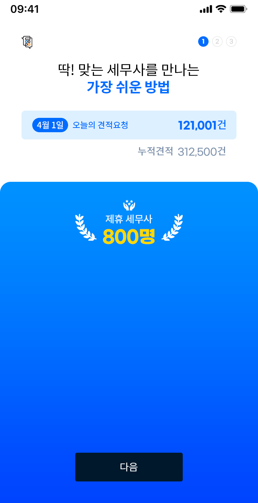
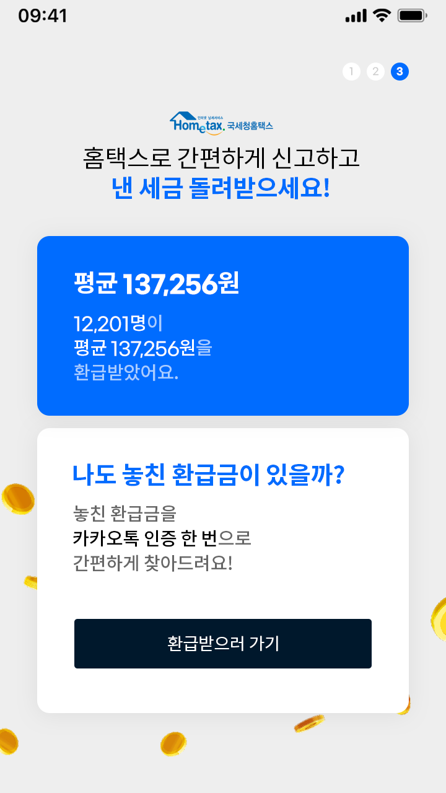

Project
Background 1
세금은 봐도봐도 어려워! 홈택스 맨날 까먹어!
세금업무를 보러가자니 귀찮고,
혼자 하기는 쉽지 않고..
N잡러는 세금관리를 어떻게 해야하지?
내가 잊고 있어도 알아서 해주는
세금관리 어플이 없을까?
블러처리 되는 말풍선입니다.
블러처리 되는 말풍선입니다.
블러처리 되는 말풍선입니다.
블러처리 되는 말풍선입니다. 블러처리 되는 말풍선입니다.
세금환급통은 누구나 쉽고 간편하게 세금을 환급받을 수 있도록 맞춤화된 서비스를 제공하는 것이 목표예요. 쉽고 간편한 프로세스를 구현했으며, 사용자에게 중요한 콘텐츠가 우선시 되고, 간편한 세금환급이 가능하도록 UI를 단순화 했어요.
-
Client Needs
처음 접한 사용자를 위해 밝은 컬러와 아이콘을 적용했으면 좋겠어요.
-
Client Needs
사용자가 접근하기 쉬운 직관적인 화면을 원해요.
-
Client Needs
간편한 세금계산을 위해 방해 요소를 최소화한 심플한 UI가 필요해요.
Intro ✣ Main세금관리,
이렇게 많은 분들이
함께하고 있어요.
인트로이자 메인은
사용자의 흥미를 끌기 위한 요소들을
곳곳에서 볼 수 있어요!
실시간 상담신청을 롤링으로 노출시킴으로써 사용자의 어플 유입을 유도했어요.

실제 리뷰로 신뢰감을 주고, 다양한 페이지를 소비할 수 있도록 리뷰 페이지로 이동을 유도했어요.

- 세무자문A엔터테인먼트 · 2021-01-31
- 세무통 덕분에 200억을 절세할 수 있었습니다.
- 세무자문B코퍼레이션 · 2021-01-31
- 세금문제는 항상 세무통에게 맡깁니다. 감사합니다
- 세무자문C컴퍼니 · 2021-01-31
- 매년 이맘때쯤 세무통에 자문 구합니다.
환급받은 금액과 간편한 사용을 강조했어요. 동전과 3D아이콘의 애니메이션으로 재미를 더했어요.
3D아이콘
